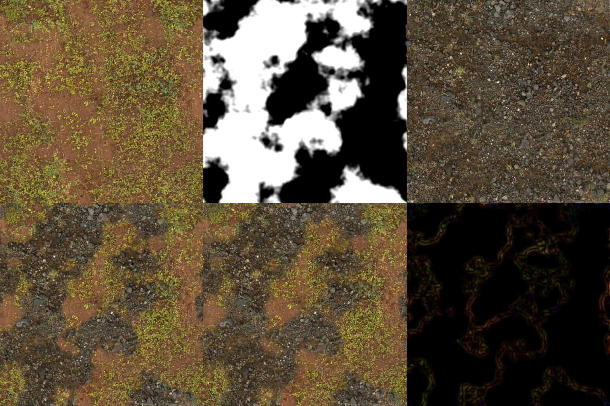

Investigação técnica e avaliação experimental de mesclagem piramidal de texturas em tempo real sem pré-computação.
Ao combinar materiais e texturas em tempo real, métodos pontuais impõem um compromisso visual destrutivo.
• Gera
descontinuidades geométricas e visuais
imediatas.
• Quebra a continuidade natural de terrenos e materiais compostos.
• Atenuação severa de altas frequências: detalhes
finos desaparecem.
• Em mapas de normais, os relevos colapsam em direção ao vetor
neutro (0,0,1).
Decomposição espectral aproximada diretamente no fragment shader sem pré-computação.
Microdetalhes mesclados com raio mínimo: zero desfoque e sem ghosting.
Gradientes de cor média mesclados suavemente: zero costuras abruptas.
Construído inline na GPU: compatível com materiais dinâmicos (Uber-Materials).
Clique nos blocos de código para visualizar a explicação técnica correspondente:
Testado em NVIDIA RTX 4090 a 3840×2160 com 4 níveis Laplacianos. Custo imperceptível na taxa de quadros.
Em materiais PBR completos ou GPUs mobile, a quantidade de leituras de textura pode se tornar um gargalo.
• Blending ingênuo = 2 leituras por canal.
• Laplacian Blending (4 níveis) = 5 leituras por
canal.
• Material PBR (Albedo + Normal + Roughness) =
15 amostragens por fragmento!
O autor sugere pular níveis alternados da pirâmide:
• Reduz as amostragens para apenas
(N/2) + 1 taps.
• Lacuna na literatura: O artigo original não investiga o
impacto quantitativo em SSIM/PSNR gerado por essa simplificação.
Investigar o compromisso entre redução de custo e fidelidade visual em engines gráficas.
“Qual é o impacto quantitativo do Level Skipping e de diferentes filtros de interpolação na taxa de retenção de contraste e na similaridade estrutural (SSIM)?”
Avaliar pulos de 1 vs 2 níveis em diferentes resoluções.
Box filter padrão vs Lanczos / Bicúbico (análise de ringing).
Protocolo rigoroso e reprodutível para comparação objetiva e visual.
Implementação e resultados reais gerados no ambiente de desenvolvimento Linux da equipe:

Retenção de variância local na borda, eliminando o efeito fantasma verificado na baseline linear.
• Demo WebGL oficial: Executável em
demo_webgl/ com Three.js.
• Pipeline Python: Implementado em
src/laplacian_blend.py.
• Infraestrutura: 100% pronta para a fase de
testes de Level Skipping e LOD Adaptativo.
Ajuste dinâmico da pirâmide Laplaciana por distância em perspectiva via derivadas de hardware (dFdx/dFdy).
• O artigo original calcula 4 a 6 níveis de forma uniforme em todos os pixels.
• Em cenas 3D com perspectiva, texels distantes já caem em mips grosseiros ($Mip \ge 3$).
• Calcular $L_0 = Mip_0 - Mip_1$ a 50m é desperdício puro de TMU, pois essas altas frequências são descartadas pelo rasterizador.
A GPU calcula o LOD em tempo real via dFdx/dFdy, truncando o laço DoG:
Permite auditar ao vivo na cena 3D a transição suave de custo computacional sem qualquer salto visual (*popping*).
Proposta tecnicamente fundamentada, viabilidade inicial comprovada e relevância prática imediata.
GPU-Friendly Laplacian Texture Blending (Wronski, JCGT 2025).
Level Skipping e LOD-Adaptive Blending 3D (Desempenho vs Qualidade).
Ambiente totalmente operacional e baseline reproduzida com sucesso.